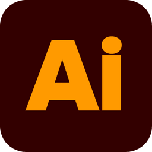
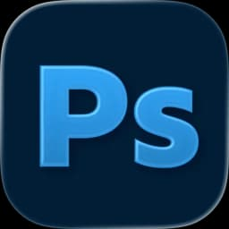
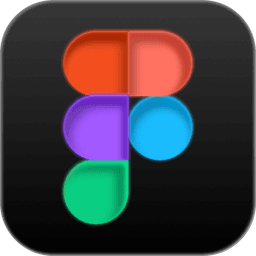
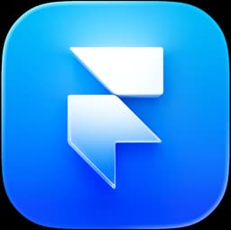
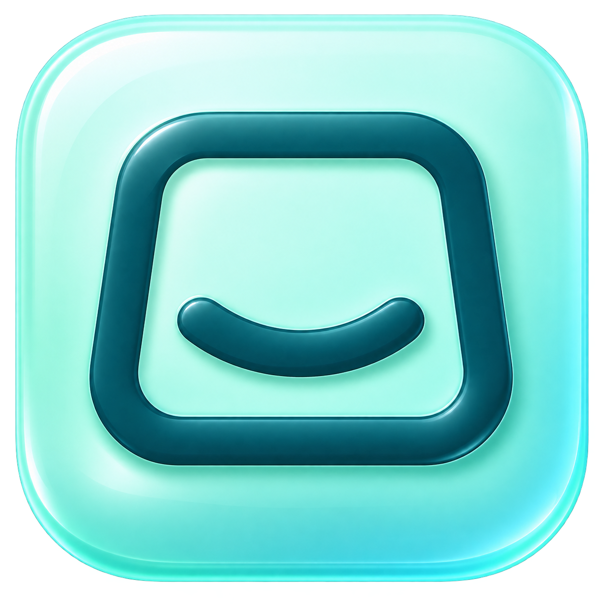

A clearer digital presence for a U.S.-based business.
ZIAD NAFEA / PRODUCT DESIGNER
Designing for people.
Thinking for business.
I turn complex ideas into clear digital experiences—connecting what people need with what a business needs to achieve.
Based in Cairo, Egypt From the first idea to the final build.
A FEW TOOLS I WORK WITH





The tool changes. The thinking stays intentional.
01 / SELECTED WORK
Thinking, made tangible.
Five websites. Different contexts.
One considered approach.
01 / 05
02 / ABOUT ME
A visual foundation.
A product mindset.
Designing beyond the screen.
I’m a product and UI/UX designer with a Computer Science background, hands-on training at ITI, and three years of professional graphic design experience.
I care about the decisions behind the interface: the problem we’re solving, the people using the product, and the business it needs to support.
My work spans user flows, responsive interfaces, interactive prototypes, and websites. I enjoy moving from the first question to a clear, carefully delivered experience.
More about me on LinkedIn3 years
Professional graphic design experience
5 websites
Selected design & web projects
ITI trained
End-to-end UI/UX · July–December 2025
03 / WHAT I BRING
The thinking.
And the making.
A connected process,
from strategy to execution.
Product design
From a product problem to a clear, usable experience.
Research · Structure · InteractionUX/UI design
Thoughtful flows, responsive interfaces, and reusable systems.
User flows · Prototypes · Design systemsWeb design & build
Bringing the design into a working website on the right platform.
WordPress · Salla · Custom webProduct thinking
Connecting what people need with what the business is trying to do.
User needs · Business goals · Clarity04 / HOW I WORK
Good questions.
Better decisions.
Scroll through the process.
Or choose a stage.
01 / 05
UNDERSTAND
The right problem comes first.
I learn about the product, its users, the market, and the business context.
05 / EXPERIENCE
A little of the journey.
APR 2026 — PRESENT
UI/UX & Graphic Designer
Maestro Bii
Creating digital interfaces and visual assets that align user needs with business and brand goals. Joined part-time and transitioned to full-time after three months.
JUL 2025 — DEC 2025
UI/UX Designer · Training
Information Technology Institute (ITI)
Practiced user research, flows, wireframes, responsive UI, interactive prototypes, accessibility, and developer handoff. Built reusable Figma systems with Auto Layout, Components, and Variables.
MAR 2025 — AUG 2025
Graphic Designer
Ammar Marketing
Produced digital and print work for clients across Egypt, Saudi Arabia, and Qatar using Adobe tools and AI-assisted workflows.
JUN 2023 — JAN 2024
Graphic Designer
Strategy for Business Solutions
Created campaign, social media, and video assets while maintaining brand consistency and quality standards.
WORKING TOGETHER
Clear thinking.
Open collaboration.
I think about the problem before the interface.
I connect user needs with business context.
I design with the final implementation in mind.
I welcome feedback and unfamiliar challenges.
06 / A FEW ANSWERS
Before we talk.
Good collaboration
starts with clarity.
How do you work with developers?
I work with implementation in mind: reusable components, responsive layouts, clear states, and organized Figma files. I prepare a practical handoff and collaborate on the details that affect the final experience.
Which platforms can you work with?
I work with Figma and FigJam for design, and WordPress, Salla, WooCommerce, and custom web builds for implementation. I choose the approach around the product and the team.
Do you only design the interface?
My work can include understanding the problem, mapping user flows, structuring content, designing the interface, and preparing the final delivery.
What kind of team are you looking for?
A team that cares about useful products, clear thinking, and open collaboration. I’m interested in product and UI/UX opportunities where I can contribute and continue to grow.
A NEW ROLE. A PRODUCT CHALLENGE.
Have a challenge?
Let’s talk.
Looking for a designer who connects user needs with business goals? Let’s talk about what your team is building.
ziadnafea101@gmail.com
Tell me what you’re working on.